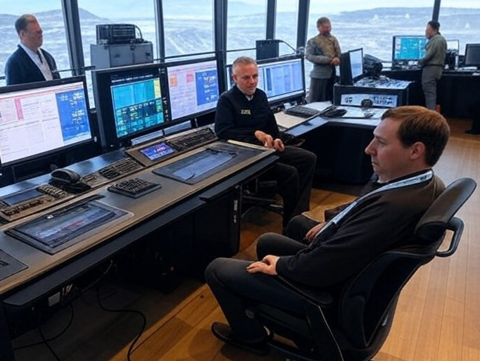

Detailed Case Studies
Explore the full details behind each of the IT service management initiatives listed on the project snapshots page. Click a title below to jump to the corresponding case study to view in detail.
Redesigning Critical Incident Management
My Role. Rio Tinto, Global Service Manager
Executive Summary
A global mining organisation operating in the Pilbara faced operational disruptions due to an inefficient Critical Incident Management (CIM) process. Delays in incident response and resolution led to costly downtime and miscommunication among stakeholders. By redesigning the CIM process to include improved categorisation, enhanced communication protocols, and fatigue management strategies, response times were significantly reduced and operational stability improved.
Background
The organisation is a global leader in mining operations, with activities spanning multiple continents and employing over 57,000 staff. The complexity of its operations required robust incident management to minimise disruptions and maintain productivity. Inefficiencies in the existing CIM process were hindering business operations and necessitated a complete overhaul.
The Challenge
- Inaccurate incident categorisation due to a flawed matrix, resulting in delayed responses.
- Confusion over team responsibilities caused inefficiencies and multiple hand-offs.
- Poorly defined communication strategies created delays and stakeholder misalignment.
- Lack of fatigue management strategies exacerbated risks during prolonged incidents.
- Vendor disengagement during incidents hampered resolution efforts.
These challenges collectively resulted in extended downtime, increased costs, and diminished operational efficiency.
Solution
Process Redesign
- Conducted a comprehensive review of the CIM process to identify weaknesses.
- Redesigned the incident categorisation matrix for improved prioritisation.
- Defined clear protocols for assigning incident ownership, reducing inefficiencies.
Communication Strategy
- Developed a detailed communication management plan outlining responsibilities and timing.
- Introduced regular communication checkpoints to maintain stakeholder alignment.
Fatigue Management
- Integrated fatigue management strategies, including shift guidelines and structured handovers.
- Created a framework to maintain team effectiveness during prolonged incidents.
Vendor Management
- Developed clear protocols to keep vendors engaged and responsive.
- Introduced a vendor-specific checklist for streamlined collaboration.
Training and Implementation
- Designed a training program to educate stakeholders on the new CIM process.
- Conducted workshops and distributed materials to ensure process understanding and compliance.
Delivering Measurable Results
- Faster response times and reduced downtime due to improved categorisation and ownership.
- Consistent and timely updates enhanced stakeholder confidence and alignment.
- Fatigue management strategies led to quicker and safer incident resolution.
- Improved vendor engagement streamlined the resolution process.
- Successful adoption of the redesigned CIM process across the organisation increased compliance and operational stability.
Insights and Lessons Learned
- Clear communication strategies and defined roles during incidents are critical.
- Proper incident categorisation helps prioritise responses effectively.
- Fatigue management is essential in prolonged incident handling.
- Process understanding and consistency underpin critical incident fundamentals.
- Users need structured and accessible guidance for effective incident handling.
This case study highlights how the right leadership and targeted strategies can drive significant improvements, even in complex global operations.
My Role
As the Global Service Manager at Rio Tinto, I was accountable for the overall success of the Critical Incident Management (CIM) process redesign. This role involved leading the teams, managing stakeholder expectations, and driving the vision of the initiative. I ensured the alignment of resources and coordinated efforts across teams to identify weaknesses, design solutions, and implement changes effectively. By overseeing the delivery of a comprehensive training program and updating key documentation, I played a central role in embedding the new process into the organisation. My leadership ensured that the redesigned CIM process was not only operationally robust but also poised to deliver lasting value to the organisation.
Ravensthorpe Technology Infrastructure Rebuild

First Quantum Minerals, IT Manager
Executive Summary
When First Quantum Minerals acquired the Ravensthorpe Nickel Mine in 2010, the site’s IT infrastructure was in disarray due to the hasty exit of the previous operator. Tasked with assessing and restoring the IT environment, our team implemented a comprehensive rebuild. By reconstructing network segments, restoring critical systems, and ensuring redundancy, we delivered an IT infrastructure that enabled the mine to achieve commercial production by December 2011.
Background
The Ravensthorpe Nickel Mine, originally constructed by BHP Billiton at a cost of billions, ceased operations within a year of commissioning due to operational challenges. The abrupt closure in January 2009 left the site’s IT infrastructure dismantled and inoperable. First Quantum Minerals acquired the mine in February 2010 with a vision to restore operations and address the reputational damage associated with the site. Rebuilding the IT infrastructure was a critical component of this endeavour.
The Challenge
- The site’s IT infrastructure had been partially dismantled, with critical equipment removed or inoperable.
- Segmented networks, including General Management, Process Control, Operations Fleet Management, and Mining Management, required reconstruction.
- Security vulnerabilities were prevalent due to the lack of firewalls and segmentation.
- Critical systems, such as Cisco IP telephony, CCTV, access control, and telecommunications, were non-functional.
- The server data centre lacked redundancy, with numerous single points of failure that posed operational risks.
- The harsh remote environment further complicated restoration efforts, demanding robust solutions to withstand operational conditions.
The Solution
Network Reconstruction
- Rebuilt network segments for General Management, Process Control, Operations Fleet Management, and Mining Management.
- Segmented networks with robust firewalls to enhance security and ensure operational independence.
Restoration of Critical Systems
- Restored the Cisco IP telephony system for reliable site communication.
- Implemented CCTV and WLAN access control systems to enhance safety and security.
- Re-established telecommunications, two-way radio systems, and fuel bowser integration.
Data Centre and Redundancy
- Rebuilt the server data centre with redundancy measures to eliminate single points of failure.
- Deployed fail-over systems to ensure operational continuity.
Comprehensive Security Measures
- Secured all network segments with advanced firewall infrastructure.
- Implemented access control mechanisms to safeguard sensitive areas and systems.
Team Coordination
- Assembled and managed a multidisciplinary team to address the wide-ranging requirements of the project.
- Engaged vendors and contractors to deliver specialised solutions within tight timelines.
The Results
- Achieved commercial production on December 28, 2011, meeting the project’s critical timeline.
- Delivered a robust, secure IT infrastructure that enabled efficient mining operations.
- Eliminated single points of failure, ensuring operational resilience.
- Enhanced site safety through CCTV, access control, and reliable communication systems.
- Provided tangible value to the operation, supporting First Quantum’s goals for operational excellence.
Insights and Lessons Learned
- Overcoming challenges associated with missing and damaged equipment required innovative problem-solving and flexible planning.
- Designing IT systems to withstand harsh conditions and ensure operational continuity was crucial for success.
- Assembling a skilled and coordinated team was pivotal to managing the complexities of the project.
- Implementing robust security measures early in the rebuild mitigated risks and safeguarded operations.
This case study exemplifies the critical role of IT infrastructure in operational success, highlighting how targeted, resilient solutions can transform even the most challenging environments into thriving operational hubs.
My Role
As the IT Manager, I played a pivotal role in orchestrating the successful restoration of Ravensthorpe’s IT infrastructure. I was accountable for assembling and leading a highly skilled team to address the project’s technical and operational challenges. My responsibilities included overseeing the comprehensive assessment of the dismantled systems, coordinating with vendors and contractors to implement robust rebuild solutions, and ensuring the timely and effective delivery of all project objectives. By managing the team’s efforts and maintaining a sharp focus on the end goals, I ensured that the rebuilt IT environment not only met but exceeded the operational requirements, enabling the site to achieve its production targets and long-term resilience.
Optimising Satellite Communications

First Quantum Minerals, Network Manager
Executive Summary
First Quantum Minerals relied heavily on satellite technology to enable communication across its remote African mining sites and headquarters in Perth, Australia. As the organisation grew rapidly during a commodity boom, increased traffic resulted in bandwidth saturation, deteriorating call quality, and reduced operational efficiency. Tasked with solving this challenge while reducing satellite costs, our team deployed Riverbed SteelHead devices, optimised network performance, and prioritised mission-critical traffic. The results included a 68% reduction in satellite utilisation and dramatic improvements in communication reliability and speed, ensuring seamless collaboration across the organisation.
Background
First Quantum Minerals operates in remote locations where traditional fibre and high-speed internet solutions were not viable due to cost and accessibility challenges. The organisation relied on 14 strategically placed satellite dishes to facilitate essential communication and data transfer between African mine sites and headquarters in Perth. As copper commodity demand surged, operational requirements intensified, leading to bandwidth congestion and deteriorating connectivity. With senior leadership based in Perth reliant on seamless communication for strategic decisions, addressing these issues became a critical business priority.
The Challenge
- Bandwidth congestion due to increased communication demands, causing poor call quality and video performance.
- Rising satellite communication costs, creating pressure to reduce expenses while improving performance.
- Latency issues at satellite edge locations, impacting application visibility and mission-critical performance.
- The need to prioritise traffic for essential operations while maintaining connectivity for non-critical functions.
- Ensuring reliable and secure data transfer to support decision-making in remote and challenging environments.
The Solution
Research and Analysis
- Conducted extensive research on network optimisation tools and tested solutions from Riverbed and Juniper.
- Collaborated with Cisco to adjust Quality of Service (QoS) settings, addressing chattiness, jitter, and redundancies.
Deployment of Riverbed SteelHead
- Chose Riverbed SteelHead for its ease of installation, intuitive management, and ability to optimise satellite bandwidth.
- Prioritised critical traffic across high utilisation links and addressed intermittent connectivity challenges.
- Accelerated SSL/TLS encrypted traffic and optimised application delivery to satellite edge locations.
Implementation
- Deployed SteelHead devices across all 14 satellite locations and at the Perth headquarters.
- Configured prioritisation for essential communications, including voice, video, and application traffic.
- Monitored performance metrics to ensure ongoing optimisation and network stability.
The Results
- Reduced satellite utilisation by 68% over a three-month period.
- Decreased CIFS WAN utilisation by 98%, significantly improving file transfer efficiency.
- Shortened PST email file transfer times from 29 hours to 3–4 minutes.
- Enhanced reliability and satisfaction, with users reporting noticeable improvements in connectivity.
- Enabled the organisation to manage bandwidth costs effectively while supporting rapid growth.
Insights and Lessons Learned
- Effective QoS and optimisation strategies ensured that essential communications were not disrupted.
- Collaborative vendor relationships, especially with Cisco and Riverbed, were key to deploying a scalable and effective solution.
- Regular performance tracking and fine-tuning of the network optimised long-term results.
- Incorporating user feedback ensured the solution addressed real-world challenges and improved satisfaction.
- The implementation set a foundation for managing evolving communication demands as the organisation continued to grow.
This case study highlights how innovative network optimisation strategies and collaborative vendor relationships can transform satellite connectivity, ensuring reliable communication even in the most remote and challenging environments.
My Role
As the Network Manager at First Quantum Minerals, I was accountable for designing and delivering a solution to address the organisation’s bandwidth challenges and communication bottlenecks. My responsibilities included leading the research, analysis, and selection process for network optimisation tools; coordinating with vendors including Cisco and Riverbed to implement robust solutions tailored to our unique satellite environment; overseeing the deployment of Riverbed SteelHead devices across global locations; prioritising business-critical traffic while optimising overall satellite utilisation to reduce costs; and collaborating with teams across headquarters and remote sites to ensure alignment and user satisfaction. By focusing on both technical excellence and business outcomes, I ensured that the new network infrastructure met the organisation’s needs for reliable, efficient, and cost-effective communication.
Hybrid Support Model for Network Maintenance

My Role. Rio Tinto, Service Manager
Executive Summary
In 2015, Rio Tinto faced mounting financial pressure to contribute to a company-wide goal of $5 billion in savings amidst a dramatic drop in iron ore prices. During this period, a CMDB asset inventory audit revealed a 229% increase in network maintenance costs due to previously unaccounted for assets. As the Service Manager, I led a strategic initiative to introduce a hybrid support model that combined hybrid & third-party maintenance with Curvature and Cisco support. This innovative approach preserved critical asset protection while significantly reducing ongoing costs. The project was projected to save $1.5 million over three years, offering a sustainable and risk managed solution to a pressing financial challenge.
Background
The collapse in iron ore prices in 2014 placed the organisation under immense financial strain. The company set ambitious cost-saving targets, driving every department to rethink traditional approaches. As network maintenance costs soared due to the discovery of unregistered assets, the existing reliance on Cisco support was no longer cost-effective. The challenge was clear: we needed to deliver meaningful savings without compromising the reliability of critical network infrastructure that supported global mining operations.
The Challenge
- The discovery of additional assets led to a 229% spike in anticipated maintenance costs, creating an unsustainable financial burden.
- Traditional methods, such as reducing support coverage, posed significant operational risks while offering only marginal savings.
- The reliance on OEM-provided support was deeply ingrained, requiring a shift in mindset to accept third-party maintenance solutions.
- Ensuring buy-in from stakeholders across diverse environments, including remote mining operations, was critical for successful implementation.
The Solution
Comprehensive Cost Review
- Conducted an in-depth analysis of Cisco maintenance contracts and associated costs.
- Engaged with the network team to identify high-cost areas and opportunities for alternative support solutions.
Hybrid Support Model
- Developed a hybrid approach combining Cisco support for critical systems and a third-party vendor for non-critical assets.
- Conducted a Request for Proposal (RFP) to evaluate third-party vendors based on cost, reliability, and coverage capabilities.
- Negotiated a scalable, flexible contract to ensure long-term cost benefits and operational stability.
Stakeholder Collaboration
- Collaborated with stakeholders in mining operations, Operational Technology (OT), and commercial teams to ensure alignment with business requirements.
- Developed communication materials and workshops to educate teams on the benefits and implementation of the new support model.
Implementation and Monitoring
- Introduced clear protocols for support escalation and asset management to ensure seamless integration of the hybrid model.
- Established regular review cycles to assess vendor performance and cost savings.
The Results
- Projected savings of $1.5 million USD over three years — ultimately exceeded as costs continued to drop post-implementation.
- Maintained critical asset protection with minimal disruption during the transition to the hybrid model.
- Enhanced visibility of network assets through updated CMDB records and streamlined maintenance processes.
- Secured buy-in across departments, ensuring smooth adoption of the new model.
Insights and Lessons Learned
- The unexpected discovery of unregistered assets highlighted the importance of maintaining an accurate and up-to-date CMDB.
- Moving beyond OEM reliance required a willingness to explore innovative solutions and manage organisational resistance to change.
- Early collaboration and transparent communication were key to gaining buy-in and ensuring a smooth transition.
- Long-term financial considerations, such as post-project support costs, must be factored into initial budgets to ensure sustainability.
- Building strong partnerships with third-party vendors ensured a reliable and cost-effective solution that aligned with organisational goals.
This case study highlights how a strategic shift in vendor engagement and asset management can lead to measurable financial savings without compromising operational integrity, even under high pressure and in globally distributed environments.
My Role
As the Service Manager, I was at the forefront of this transformative initiative. My responsibilities included leading the review of Cisco maintenance costs and identifying cost-saving opportunities through a hybrid support model; collaborating with the network team to assess the state of the infrastructure and define support requirements; managing the vendor engagement process, including drafting the RFP, evaluating proposals, and negotiating contracts; engaging stakeholders across the organisation, including remote mining sites, to ensure alignment with operational needs; and overseeing the implementation of the hybrid model, monitoring its performance, and ensuring its sustainability. By balancing financial imperatives with operational needs, I delivered a solution that met cost-saving targets while preserving the reliability of the network infrastructure.
Delivering Reliable Communications for African Copper Mining Operations
First Quantum Minerals, Lead
[Paste full content here]